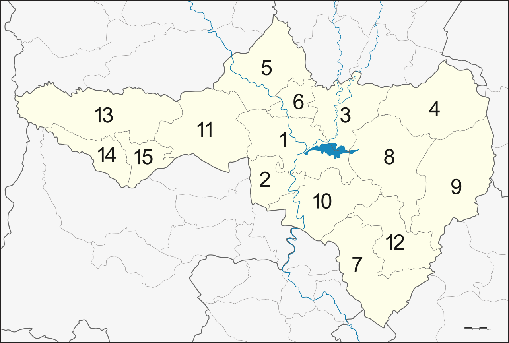
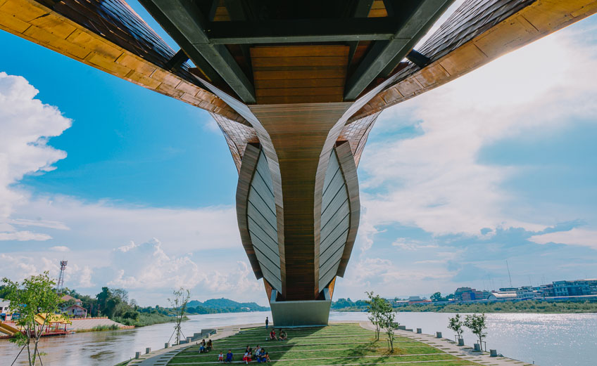
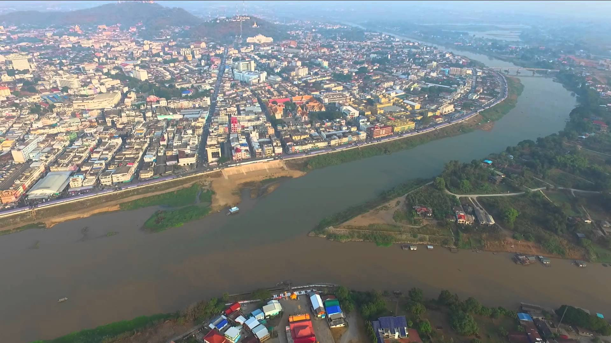

|
 |
 |
 |
 |
นครสวรรค์มี 15 อำเภอ

1.อำเภอเมืองนครสวรรค์ |
9.อำเภอไพศาลี 10.อำเภอพยุหะคีรี 11.อำเภอลาดยาว 12.อำเภอตากฟ้า 13.อำเภอแม่วงก์ 14.อำเภอแม่เปิน 15.อำเภอชุมตาบง |
"เมืองสี่แคว แห่มังกร พักผ่อนบึงบอระเพ็ด ปลารสเด็ด ปากน้ำโพ"
นครสวรรค์ เป็นจังหวัดที่ตั้งอยู่ในตอนบนของภาคกลาง หรือบางหน่วยงานจัดให้อยู่ในภาคเหนือตอนล่าง
จึงได้รับสมญานามว่าเป็น "ประตูสู่ภาคเหนือ"
มีพื้นที่ประมาณ 9,597 ตารางกิโลเมตร เป็นจังหวัดที่มีความสำคัญในทางประวัติศาสตร์อีกจังหวัดหนึ่งของประเทศไทย
มีพื้นที่ติดต่อกับหลายจังหวัด ได้แก่ ด้านเหนือ
ติดต่อกับจังหวัดพิจิตรและกำแพงเพชร ทางตะวันออกติดกับจังหวัดเพชรบูรณ์และลพบุรี
ด้านใต้ติดกับจังหวัดสิงห์บุรี, ชัยนาท และอุทัยธานี ส่วนด้านตะวันตกติดกับจังหวัดตาก
ประวัติศาสตร์เมืองนครสวรรค์
ประวัติความเป็นมา

"ปากน้ำโพ" อาจมาจากคำว่า "ปากน้ำโผล่" เพราะเป็นที่ปากน้ำแคว ยม และน่าน มาโผล่รวมกันเป็นต้นแม่น้ำเจ้าพระยา หรืออีกประการหนึ่งเพราะมีต้นโพธิ์ขนาดใหญ่อยู่ตรงปากน้ำ ในบริเวณวัดโพธิ์ ซึ่งเป็นที่ตั้งศาลเจ้าพ่อกวนอูในปัจจุบัน จึงเรียกกันว่า “ปากน้ำโพธิ์” ก็อาจเป็นได้
นครสวรรค์เป็นเมืองโบราณ ซึ่งสันนิษฐานว่าตั้งขึ้นในสมัยกรุงสุโขทัยเป็นราชธานีโดยมีปรากฏชื่อในศิลาจารึกเรียกว่า เมืองพระบาง เป็นเมืองหน้าด่านสำคัญในการทำศึกสงครามมาทุกสมัย ตั้งแต่สมัยกรุงสุโขทัย กรุงธนบุรี จนถึงกรุงรัตนโกสินทร์

พบร่องรอยการตั้งถิ่นฐานประมาณ 3000 - 2700 ปีมาแล้ว จากแหล่งโบราณคดีบ้านใหม่ชัยมงคล ตำบลสร้อยทอง อำเภอตาคลี บ้านพุขมิ้น บ้านพุช้างล้วง บ้านจันเสนในอำเภอตาคลี บ้านหนองใหญ่ บ้านพุนิมิต บ้านซับตะเคียน ในอำเภอตากฟ้า แสดงให้เห็นถึงการเข้ามาตั้งถิ่นฐานของมนุษย์มากกว่า 1 สมัย โบราณวัตถุที่ขุดพบมีหลายประเภท ส่วนใหญ่เป็นเศษภาชนะดินเผาประเภทต่าง ๆ นอกจากนั้นยังมีเครื่องมือเครื่องใช้ และเครื่องประดับที่ทำด้วยหินขัด ดินเผา เปลือกหอยทะเล สำริด และเหล็ก บางแห่งก็มีการอยู่อาศัยสืบเนื่องมาจนถึงสมัยประวัติศาสตร์ คือ สมัยทวาราวดี เช่นที่จันเสน เป็นต้น
ชุมชนสมัยก่อนประวัติศาสตร์ส่วนใหญ่มักเป็นชุมชนเกษตรกรรมขนาดเล็ก รู้จักถลุงโลหะและหล่อสำริดมาทำเครื่องมือเครื่องใช้ ตั้งอยู่ไม่ไกลจากแหล่งโลหะสำคัญคือทองแดงและเหล็กซึ่งมีอยู่ที่เขาวงพระจันทร์เขาทับควายในเขตอำเภอโคกสำโรงจังหวัดลพบุรีและบริเวณเขาแม่เหล็กในเขตอำเภอพยุหคีรี จังหวัดนครสวรรค์ ชุมชนเหล่านี้มีการติดต่อสัมพันธ์และร่วมวัฒนธรรมกับชุมชนก่อนประวัติศาสตร์อื่น ๆ ในพื้นที่ภาคกลางของประเทศไทย
จากการสำรวจด้วยภาพถ่ายทางอากาศ ประกอบกับหลักฐานทางประวัติศาสตร์ และโบราณคดีได้พบชุมชนโบราณสมัยทวาราวดีมากกว่า 20 เมือง กระจายอยู่ตามอำเภอต่าง ๆ ของจังหวัดนครสวรรค์ เช่น จันเสน ในพื้นที่อำเภอตาคลี เมืองบน ในพื้นที่อำเภอพยุหคีรี เมืองทัพชุมพล ในพื้นที่อำเภอเมือง ฯ เมืองดอนคา เมืองหัวถนน ในพื้นที่อำเภอท่าตะโก และเมืองดงแม่นางเมืองในพื้นที่อำเภอบรรพตพิสัยเป็นต้นได้พบร่องรอยของเมืองที่มีคูน้ำคันดิน ทั้งแบบชั้นเดียวและสองชั้น สระน้ำ ตลอดจนโบราณสถาน และโบราณวัตถุ อยู่ในที่ตั้งของเมืองต่าง ๆ ดังกล่าวแล้ว มีความคล้ายคลึงกับเมืองสมัยทวาราวดีอื่น ๆ เช่น อู่ทอง พงตึกนครปฐม
ดินแดนนครสวรรค์ในสมัยทวาราวดี เป็นชุมชนที่มีการติดต่อกับเมืองไกลต่างประเทศ เช่น อินเดีย ทำให้นครสวรรค์มีบทบาทและความสำคัญในฐานะที่เป็นรัฐกึ่งกลาง ที่เชื่อมโยงระหว่างดินแดนทางทิศตะวันตก และดินแดนทางทิศตะวันออก เป็นจุดส่งต่ออารยธรรมอินเดียไปทางเขมร และเวียตนามภาคกลางในปัจจุบัน นอกจากนี้ยังมีความสัมพันธ์ทางวัฒนธรรมใกล้ชิดกับชุมชนในภาคตะวันออกเฉียงเหนืออีกด้วย